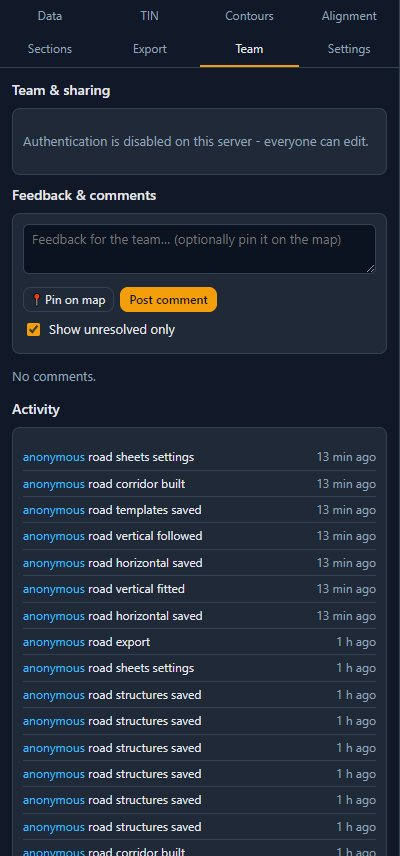
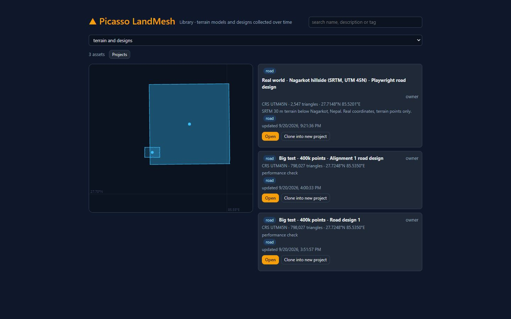
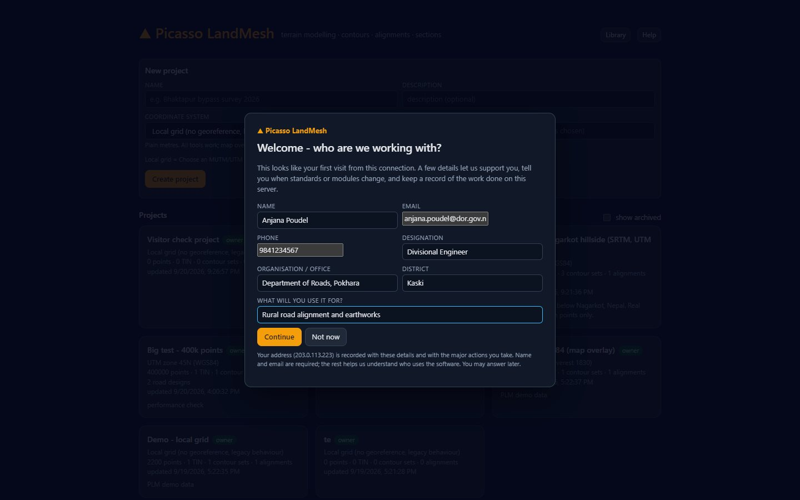
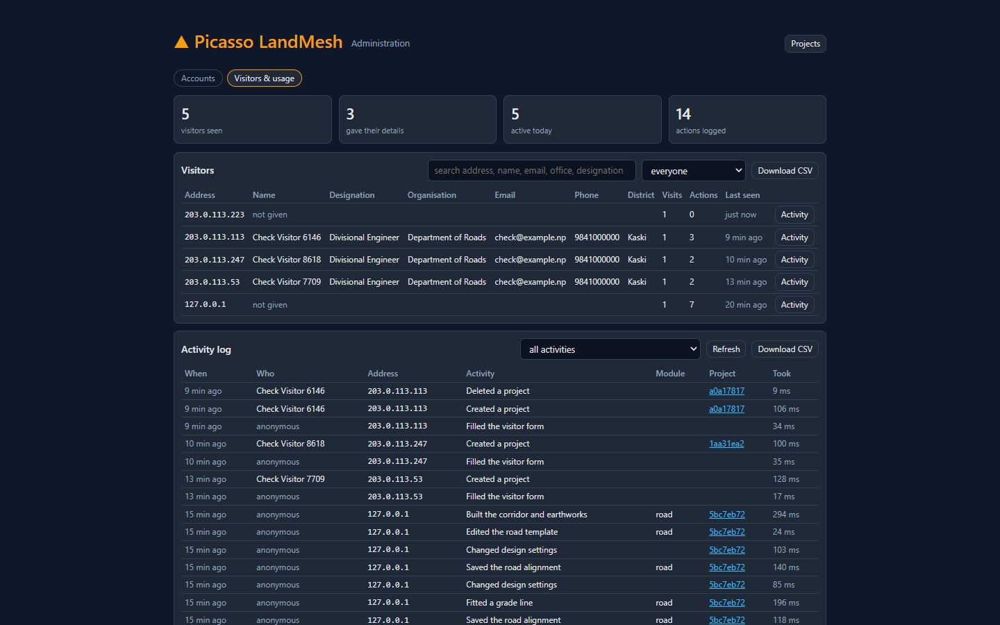

Accounts and sharing
Accounts are created by the administrator. A project belongs to one owner, who shares it with editors and viewers. Finished terrain models and designs are archived and catalogued so they stay valuable over the years.
Accounts and signing in
- The administrator creates your account and gives you the username and password; there is no self-registration. Ask the administrator to reset a forgotten password.
- Sign in from the projects page. Your name and role appear in the top right; Sign out ends the session.
- Your account has a role: user for engineers and surveyors, admin for the people who manage accounts and can open every project.
The guest sandbox
When the administrator has enabled it, visitors without an account can press Continue as guest and try the software in a private sandbox.
| Guests can | Guests cannot |
|---|---|
| Create a few projects, import a limited number of points, build a limited number of terrain models, generate contours, draw alignments, cut sections, design a road and preview every drawing sheet | Download DXF, Excel, CSV or archives; share projects; keep projects beyond the sandbox lifetime (they are deleted after some days) |
The exact limits are shown in the yellow banner on the projects page. Guest jobs run after the jobs of signed-in users. Signing in claims your sandbox projects: everything you made as a guest is transferred to your account.
Roles in a project
| Role | Can |
|---|---|
| Owner (one per project) | Everything: change data and designs, add or remove members, change roles, change visibility, transfer ownership, archive, restore and delete the project. Administrators have the same rights everywhere. |
| Editor | Import and edit data, build terrain models, generate contours, edit alignments and designs, build corridors, export. |
| Viewer | Open the project, browse the map, charts and designs, preview drawings, export, post comments. |
The badge on a project card shows your role. A project can be private (members only), visible to your organisation, or public (anyone can view). Archived projects are read-only for everyone until the owner restores them.
Sharing, comments and activity

- Team & sharing (owner only): set the visibility, Add member by username with the editor or viewer role, change or remove members, Transfer ownership… to a colleague.
- Feedback & comments: anyone with access can post a comment, optionally pinned on the map at a location or on an alignment at a chainage; replies form a thread and threads can be resolved. Pins are a map layer.
- Activity lists who did what and when: imports, builds, alignment edits with their change notes, corridor builds, exports.
- Alignments are edited by one person at a time. The Alignment tab shows who holds the turn; the owner can force a release.
The Library

Every TIN run and every design you can see is listed with its footprint, size, coordinate system, tags and lineage. Search by name or tag, or pan the map to the area of interest. Open jumps to the project; Clone into new project copies a terrain model into a fresh project of your own, so old surveys and designs become reusable assets. Add tags (district, road name, year) to a project under Settings to make it easy to find.
Archiving and backups
- The owner can Archive project under Settings. The project becomes read-only and a portable archive (a zip with the project database and its description) is written on the server; Download archive (.zip) gives you a copy. Restore project makes it editable again.
- Archived projects are hidden from the projects page unless you tick show archived.
- The administrator runs regular backups of the whole installation with the backup command; ask them before deleting anything you might need again.
When the server is busy
- Long operations are jobs. When several people work at once your job waits in a queue and the panel shows waiting in queue: 2 of 3 with an estimate. One job per user runs at a time; guests wait behind account holders.
- Some immediate operations (constraint detection, profiles, terrain tiles) can answer server busy, retrying: the browser retries by itself after a few seconds.
- A very large build that would not fit in the server's memory is refused with a message; import fewer points or ask the administrator for a larger server.
- The workspace shows a banner while the server is under heavy load.
Who is using the server
The first time you reach this server from your office connection you are asked to introduce yourself: name, email, phone, designation, organisation and district. It takes a moment and it is what lets the people running the server support you and tell you when a standard or a module changes. You may answer Not now; the form comes back after a few days. Once answered, it is never shown again from that connection - the server remembers the address and sets a cookie.

From then on, every major action is written into a register: importing a survey, building a terrain model, generating contours, saving an alignment, cutting cross-sections, starting a design, saving the grade line or template, building the corridor, and every export. Ordinary looking around - panning the map, opening a panel, re-reading a table - is not recorded.
The administrator reads the register on the Admin page under Visitors & usage: who has been here, what they gave, how many visits and actions each has made, and the activity log itself, filtered by person or by kind of activity and downloadable as CSV for a report.

Administrator page
Administrators see an Admin button on the projects page. The page has two tabs: Accounts and Visitors & usage. On the first they create accounts (username, password, role, organisation, full name, email, notes), edit details, set a new password, disable accounts and list every project. The same actions are available from the command line on the server for scripted setups.